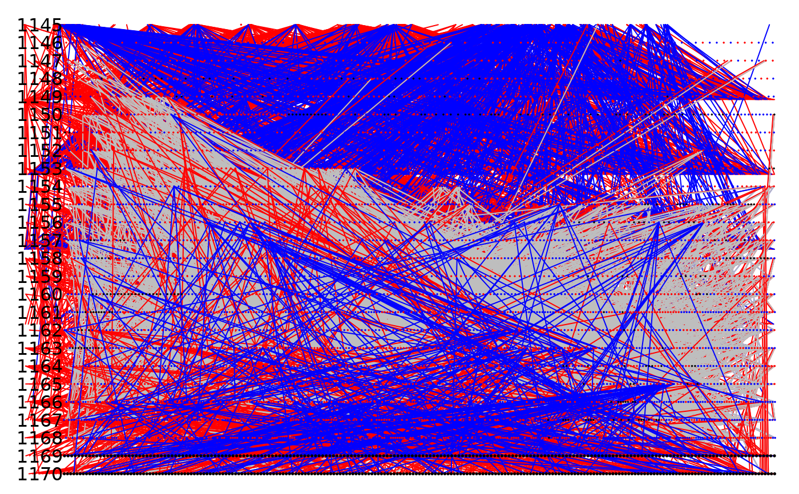

Plots a pedigree, with options specific to considerations for pedigrees used to for quantitative genetic inference in natural populations. Pedigrees containing only those individuals that are informative with respect to (genetic) variation in an arbitrary trait can be plotted, potentially overlain on a complete pedigree. Functions also exist to plot various types of pedigree links associated with focal individuals.
Arguments
- Ped
An ordered pedigree with 3 columns: id, dam, sire
- cohorts
An optional numeric vector of the same length as the pedigree designating, for example cohort affinities or birth years
- sex
An optional numeric vector of the same length as the pedigree containing the sexes (may be unknown) of all individuals with entries in the pedigree. Defaults (modifiable with
sexInd) are 0=male and 1=female- dat
An optional vector or data frame containing indicators of data availability. If dat contains only ones and zeros, then any individual with any entry of one will be considered as having data records. If data contains values other than ones and zeros, individuals in the pedigree with rows in data that contain at least one available record, i.e., one data record is not NA, will be treated as having data.
- dots
If 'y', then a dot will be printed representing each individual in the pedigree. If sexes are available, dots will be colour coded by sex.
- plotfull
To be used when dat is supplied. If 'y' (the default), individuals in the pedigree that are uninformative with respect to the available data have their pedigree links plotted in gray.
- writeCohortLabels
To be used when cohorts is used. Will plot the cohort values on the left hand side of the pedigree image.
- links
Default is 'all', other values are 'mums' to print only maternal pedigree links and 'dads' to print only paternal pedigree links.
- sexInd
To be used with if sex is supplied and if the vector of sex specifiers differs from the default.
- dotSize
Set the dot size bigger or smaller
- dataDots
Will print dots over the dots denoting individuals, but denoting individuals with available data as indicated by dat.
- dataDots.cex
controls the size of dataDots relative to dots.
- cohortLabs.cex
controls the size of cohort labels.
- retain
When those pedigree links only informative relative to phenotypic data availability are to be plotted, this controls whether or not a pruned pedigree based on phenotypic data is plotted (if set to "pruned"), or whether strictly only those informative pedigree links are plotted (the default)
- focal
An optional list containing the id of an individual and the kinds of relatives of the focal individual to which to plot pedigree links. Available types are 'offspring','descendants','parents',,ancestors', and 'kin'.
- sexColours
The colours that will be used to draw points and or lines associated with males and females.
- ...
Additional graphical parameters.
See also
fix_ped to prepare pedigrees that may not explicitly contain records for all individuals (i.e., where founding individuals may only appear in the dam or sire column).)
Author
Michael Morrissey michael.morrissey@st-andrews.ac.uk
Examples
data(gryphons)
pedigree <- fix_ped(gryphons[, 1:3])
## draw the gryphon pedigree by pedigree depth
draw_ped(pedigree)
## draw the gryphon pedigree by cohort
draw_ped(pedigree,
cohorts = gryphons$cohort, writeCohortLabels = "y",
cohortLabs.cex = 1
)
## draw the gryphon pedigree by cohort with only maternal links
draw_ped(pedigree, cohorts = gryphons$cohort, links = "mums")
## draw the gryphon pedigree by cohort with colour only for those
## indiduals that are informative relative to the quantitative
## genetics of a hypothetical trait only measured for individuals
## in the last two cohorts, emphasize the phenotyped individuals
## with large black dots, and all other individuals with dots
## colour coded by sex:
dataAvailability <- (gryphons$cohort >= (max(gryphons$cohort) - 1)) + 0
draw_ped(pedigree,
cohorts = gryphons$cohort, sex = gryphons$sex,
dots = "y", dat = dataAvailability, writeCohortLabels = "y", dataDots = "y"
)

#> Individuals in full pedigree: 4918
#> Individuals in informative pedigree subset: 721